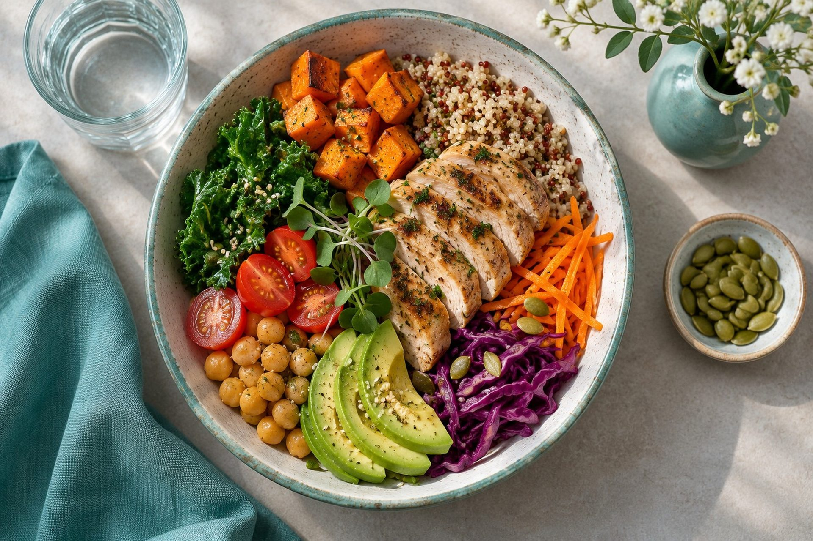

식품 지연성 반응 검사
식품 검사와 음식 알레르기 상담 정보를 안내합니다.
식품 검사와 음식 알레르기 상담 정보를 안내합니다.
상담에서 확인할 항목과 방문 전에 준비할 내용을 안내합니다.


상담에 가져올 식품 기록
음식 기록은 평소 섭취한 재료와 날짜를 기준으로 준비해 주세요.
- 곡류 기록: 밀, 보리, 귀리, 쌀을 먹은 날짜를 적어 주세요.
- 유제품 기록: 우유, 치즈, 요거트의 섭취 여부를 적어 주세요.
- 육류 기록: 소고기, 돼지고기, 닭고기를 먹은 날을 적어 주세요.
- 해산물 기록: 새우, 게, 고등어, 연어 섭취 내용을 적어 주세요.
- 채소 기록: 토마토, 감자, 양배추를 먹은 날짜를 적어 주세요.
- 과일 기록: 사과, 바나나, 오렌지 섭취 여부를 적어 주세요.
- 견과 기록: 땅콩, 호두, 아몬드가 포함된 음식을 적어 주세요.
- 콩류 기록: 대두, 완두, 강낭콩 섭취 상황을 적어 주세요.
- 양념 기록: 마늘, 생강, 고추가 들어간 음식을 적어 주세요.
기록한 식품은 검사 항목과 같다고 단정하지 말고 상담 때 확인해 주세요.
검사와 결과 상담 순서
- 상담에서 확인할 증상과 검사 목적을 정리합니다.
- 채혈이 필요한지와 방문 일정을 접수 담당자에게 확인합니다.
- 검사 항목과 결과를 받는 방법을 안내받습니다.
- 결과가 준비되면 담당 의료진과 설명 일정을 정합니다.
채혈 전에는 복용 중인 처방약과 보충 제품을 의료진에게 알려 주세요.
검사 당일 방문 시각과 결과 상담 가능 날짜를 함께 확인해 주세요.
결과 상담에서는 결과지의 항목과 기록한 식사 내용을 의료진과 검토합니다.
필요한 경우 다음 영양 상담 날짜와 문의 방법을 정리해 두세요.
검사 전 문의
검사 예약과 준비 방법은 병원에 확인해 주세요. 검사 전 식사나 복용 약을 임의로 바꾸지 말고 별도 지침이 있는지 확인해 주세요.
식품 기록
최근 먹은 음식과 불편했던 상황을 기억하는 범위에서 메모해 주세요. 특정 식품을 먹은 뒤의 반응을 기록할 때 날짜와 상황을 함께 적으면 상담에서 확인하기 쉽습니다.
결과 확인
검사 결과는 담당 의료진과 상담해 해석해 주세요. 결과만으로 식품을 제한하거나 식단을 크게 바꾸지 말고 필요한 경우 영양 상담을 요청해 주세요.
자주 묻는 질문
검사 목적은 어떻게 확인하나요?
의심 증상과 확인하려는 내용을 먼저 의료진과 상담해 주세요. 식품 IgG 검사는 음식 알레르기 진단에 권장되지 않습니다.
식사 기록에 무엇을 적나요?
음식 종류와 섭취량, 시각, 조리 형태, 증상 시작 시각을 함께 기록해 주세요.
이전 검사 결과도 필요한가요?
알레르기 진료 기록과 검사 결과, 처방 내역이 있으면 상담에 가져와 주세요.
검사 전에 약을 끊어야 하나요?
복용약은 임의로 중단하지 말고 검사 전 의료진에게 확인해 주세요.
결과만으로 식품을 제한해도 되나요?
결과표만으로 진단하거나 식단을 바꾸지 말고 의료진과 해석을 확인해 주세요.
여러 식품을 피해야 하면 어떻게 하나요?
식품 제한과 대체 식단은 영양 섭취를 고려해 전문가와 상의해 주세요.
즉각적인 반응도 기록하나요?
증상의 종류와 발생 시각, 지속 시간, 응급 진료 여부를 적어 상담 때 알려 주세요.
호흡 곤란이 생기면 어떻게 하나요?
호흡 곤란이나 입술·혀의 부기, 의식 저하가 있으면 119 또는 응급의료기관에 연락하세요.
어린이 검사나 임신 중 식사 변경은요?
어린이, 임신·수유 중인 경우 검사와 식사 변경 전에 전문 의료진에게 문의해 주세요.
결과 상담은 따로 예약하나요?
결과를 받은 뒤 설명 일정과 다음 확인 날짜를 병원에 문의해 기록해 두세요.
검사 전 식사 유지
검사를 앞두고 평소 식사를 중단하거나 특정 식품을 다시 먹어 보지 마세요. 준비 방법에 별도 안내가 있는지 예약 담당자에게 확인해 주세요.
결과지 질문 표시
결과지에서 뜻을 알고 싶은 항목에 표시해 상담 때 질문해 주세요. 검사 결과만으로 음식 알레르기를 확정하거나 식품을 제외하지 말고, 의심 증상은 알레르기 진료에서 확인해 주세요.
식품 제한 기록
현재 피하고 있는 식품이 있다면 종류와 제한을 시작한 날짜, 당시 이유를 정리해 주세요. 여러 식품을 제외하고 있다면 식사 대안과 영양 상태를 의료진 또는 영양 전문가와 상담해 주세요.
알레르기 응급 정보
과거 호흡 곤란이나 전신 반응으로 응급 진료를 받은 적이 있으면 당시 진료 내용과 처방받은 대응 계획을 알려 주세요. 응급 증상이 생기면 검사 상담을 기다리지 말고 119에 연락해 주세요.
| 상담 자료 | 기록 항목 |
|---|---|
| 검사 날짜 | 검사 결과지와 날짜 |
| 식품 기록 | 먹은 시점과 상황 |
| 불편 내용 | 느낀 점과 지속 시간 |
검사 전에 식품을 바꾸지 않기
검사 예약을 앞두고 평소 식단을 중단하거나 특정 식품을 다시 먹어 보지 마세요. 준비 방법이 따로 있는지 접수 담당자에게 확인해 주세요. 복용 약이나 보충 제품도 검사 전에 임의로 바꾸지 말고, 안내가 필요한 항목은 처방한 의료진에게 문의해 주세요.
결과 상담 준비
결과지에서 궁금한 항목에 표시하고 검사 날짜와 함께 준비해 주세요. 특정 음식 뒤 증상이 있었다면 식품 이름, 섭취 시각, 증상 시작 시점을 기록해 의료진에게 설명해 주세요. 검사 결과만으로 음식 알레르기를 확정하거나 식품을 제외하지 말고 상담에서 확인해 주세요.
제한 식품과 대체 식사
현재 피하는 음식이 있다면 종류와 제한을 시작한 날짜, 이유를 정리해 주세요. 여러 식품을 제외하고 있거나 식사 선택이 어려우면 식사 기록을 준비해 의료진 또는 영양 담당자와 상담해 주세요. 식단을 크게 바꾸기 전에는 대체할 식품과 필요한 안내를 확인해 주세요.